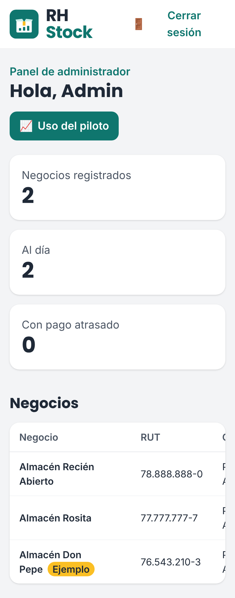
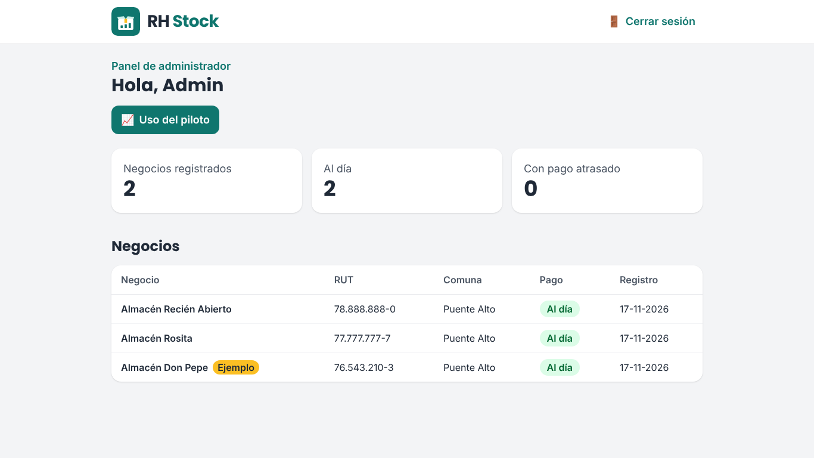
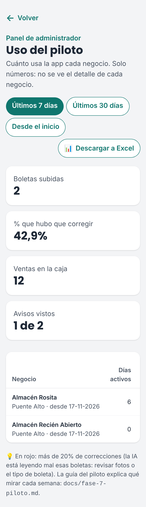
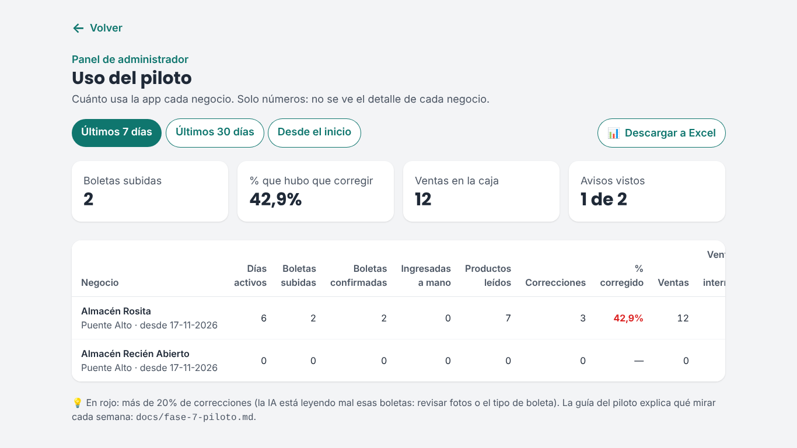
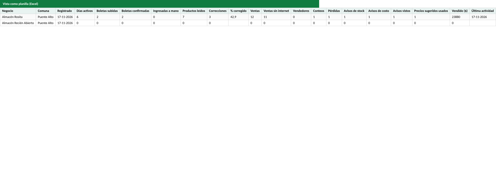

1 Panel de administrador
Nuevo botón “Uso del piloto”.


Panel “Uso del piloto” para el administrador: cuánto usa la app cada almacén (boletas, correcciones a lo que leyó la IA, ventas, ventas sin internet, avisos vistos, precios sugeridos usados), con descarga a Excel. Solo números, nunca el detalle del negocio. La guía completa del piloto está en docs/fase-7-piloto.md.
Nuevo botón “Uso del piloto”.


Resumen arriba y una fila por almacén. En rojo, si hubo que corregir más del 20% de lo que leyó la IA. Se elige el período (7 días, 30 días o desde el inicio) y se descarga a Excel cada semana.


La misma tabla en Excel, para guardar el avance de cada semana.
